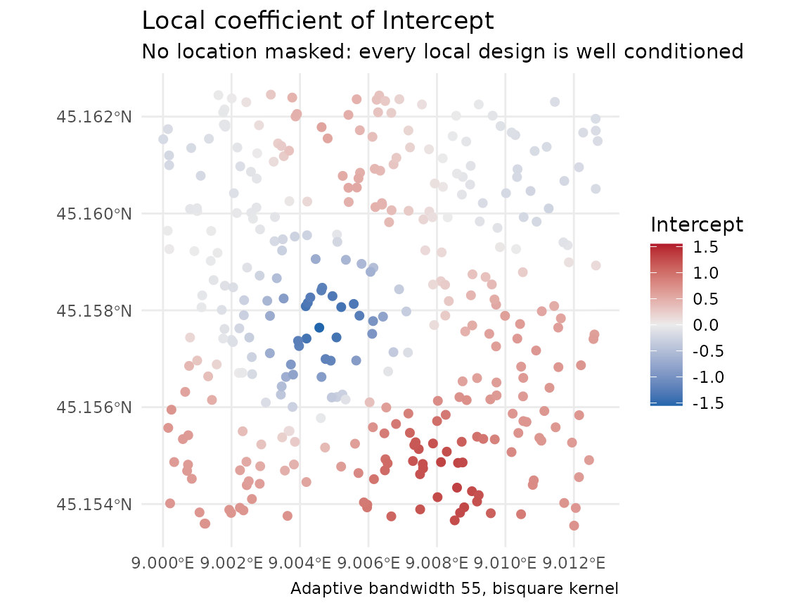
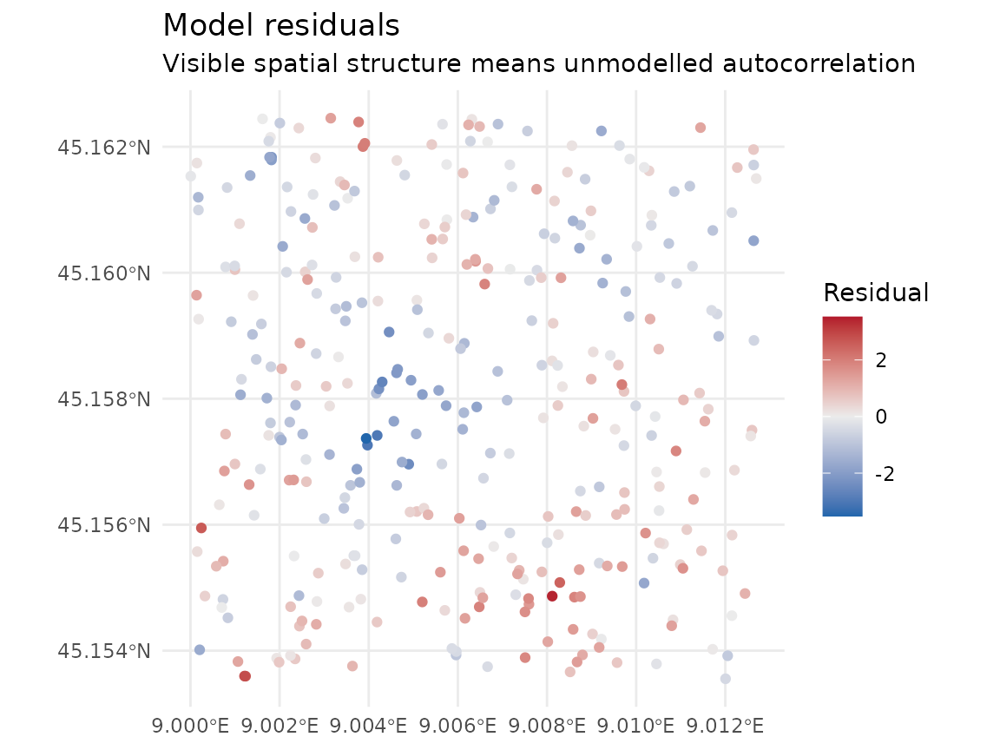
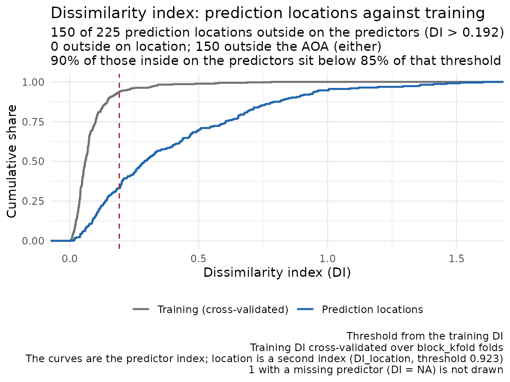
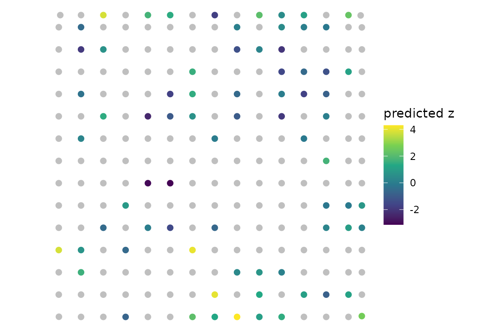

A cross-validated score says how far the predictions fell from held-out values. It does not say whether the model left spatial structure in its residuals, or at which locations the score applies. This article fits the random forest and GWR on one simulated field and shows the code for the Bayesian GP, writes a backend of its own, scores them on the same folds, and then answers those two questions. It also shows how to choose predictors without letting the choice see the held-out rows.
This article needs four optional packages: ranger
for the random forest, sp for GWR, gstat for
the autocorrelation ranges and ggplot2 for the figures.
Where one is missing, the code that needs it is shown but not
run.
Choosing a backend
The package fits three backends behind one spatial_fit
class, so the functions that check, compare and map a fit take any of
them. compare_models_cv() scores them on the same folds.
Before running it, pick the candidates by what each backend gives
you:
| Backend | Use it for | Needs |
|---|---|---|
Random forest, fit_rf_model()
|
nonlinear effects and interactions you do not write down; permutation importance in place of coefficients | ranger |
GWR, fit_gwr_model()
|
coefficients that vary across the map, which you can map and interpret | sp |
Bayesian GP, fit_bayesian_spatial_model()
|
a posterior distribution: predictive intervals, a standard error for
each point of a surface, and the continuous ranked probability score
(CRPS); count, binary, ordinal and categorical responses through
family
|
brms and a C++ toolchain |
The random forest is the cheapest to fit and to cross-validate. Each
fold of cv_bayes() is a full MCMC (Markov chain Monte
Carlo) run, so the Bayesian GP is by far the slowest of the three, with
GWR between them.
No backend fixes folds that are wrong for the map. All three can
predict from location, the forest when it is given the coordinates, so
the fold scheme has to match the distances the map predicts at before a
comparison of backends means anything;
vignette("spatial-cross-validation") covers that. If the
question is only whether the predictors miss spatial structure,
residual_morans_i() on the cheapest fit you can make
answers it before you pick a backend.
A simulated field
One real predictor, a, and a spatial field that no
predictor carries drive the response; b is noise. The field
has an exponential covariance with range parameter 70 m, so its
correlation falls to 5 percent at about 210 m, three times the range
parameter.
library(sf)
library(spatialkit)
set.seed(11)
n <- 350
xy <- data.frame(x = 5e5 + runif(n, 0, 1000), y = 5e6 + runif(n, 0, 1000))
D <- as.matrix(dist(xy))
field <- as.numeric(t(chol(exp(-D / 70) + diag(1e-8, n))) %*% rnorm(n))
xy$a <- rnorm(n)
xy$b <- rnorm(n)
xy$z <- 1.5 * xy$a + field + rnorm(n, sd = 0.3)
pts <- st_as_sf(xy, coords = c("x", "y"), crs = 32632)The three backends
Random forest
rf <- fit_rf_model(pts, "z", c("a", "b"))
rf## <Random Forest (ranger)> spatial model fit
## Formula : z ~ a + b
## n : 350
## CRS : EPSG:32632
## Trees : 500 (mtry = 1, min node = 5)
## Coords as predictors: no - no spatial information used; see ?fit_rf_model
## Sampling: bootstrap, with replacement (100.0% of rows per tree)
## OOB RMSE: 1.1828 OOB R^2: 0.5904
## Importance (permutation): a=4.191, b=-0.01683
##
## OOB is a random hold-out: under spatial autocorrelation it is the error
## of predicting among the samples, and reads low for predictions made
## farther from the data than the samples sit from each other. Score a map
## that predicts farther with cv_rf() on folds at its distances
## (?fold_separation).The forest’s fitted values, and so its R² and residuals, are out-of-bag: each row is predicted by the trees whose bootstrap sample left it out. The last lines of the print say what that random hold-out measures.
GWR, with a map of its coefficients
gwr <- fit_gwr_model(pts, "z", c("a", "b"))
gwr## <GWR> spatial model fit
## Formula : z ~ a + b
## n : 350
## CRS : EPSG:32632
## Bandwidth: 55 neighbours (adaptive, bisquare kernel)
## AICc : 932.95
## Eff. parameters: 67.1 of 350 observationsEach location gets its own regression, weighted towards its nearest
neighbours, and coef.gwr_fit() returns one row of
coefficients per location. plot.spatial_fit() maps one of
them:
plot(gwr, type = "coefficients", term = "Intercept")
The local intercept takes up the field the predictors miss: its
correlation with the simulated field is 0.65. The local coefficient of
a runs from 1.16 to 1.72, around a true value of 1.5 that
is the same everywhere. A map of a local coefficient shows estimation
noise as well as real variation.
Bayesian GP
The Bayesian GP models the residual spatial structure as a Gaussian
process over the coordinates. The chunk below is shown but not run. The
fit needs brms and a C++ toolchain, and compiling and
sampling it takes longer than the rest of this article together.
bayes <- fit_bayesian_spatial_model(pts, "z", c("a", "b"),
chains = 2, iter = 1000, seed = 1)
bayesOn this field the fit warns that the autocorrelation range sits below
what its default basis resolves, and names the
gp_resolution that would resolve it. “What the basis
resolves” on ?fit_bayesian_spatial_model explains the
floor. predictor_vars = character(0) fits a GP with an
intercept alone, which shows how much of the surface the spatial term
carries without the predictors.
Writing your own backend
Any model can join the comparison once it is wrapped as a
spatial_fit, the object the checks in this article take.
The function below fits a linear model and passes it to
new_spatial_fit() with the formula, the response, the
predictors and the training rows. subclass names the class
the methods dispatch on. cv_spatial() scores each fold
through predict(), and summary.spatial_fit()
and model_metrics() need fitted(), so the
backend defines both; residuals() is optional.
lm_fit <- function(train_sf, response_var = "z", predictor_vars = c("a", "b")) {
d <- st_drop_geometry(train_sf)
# With no predictors the model is intercept-only: "z ~ 1", not "z ~ ".
rhs <- if (length(predictor_vars)) paste(predictor_vars, collapse = " + ") else "1"
fml <- as.formula(paste(response_var, "~", rhs))
new_spatial_fit(
subclass = "lm_fit",
engine = lm(fml, data = d),
formula = fml,
response_var = response_var,
predictor_vars = predictor_vars,
data_sf = train_sf
)
}
predict.lm_fit <- function(object, newdata = NULL, ...) {
if (is.null(newdata)) return(fitted(object$engine))
as.numeric(predict(object$engine, newdata = st_drop_geometry(newdata)))
}
residuals.lm_fit <- function(object, ...) residuals(object$engine)
fitted.lm_fit <- function(object, ...) fitted(object$engine)
# Registered so that spatialkit's own calls find the methods wherever this
# code runs; at the top level of a script they are found without it.
for (g in c("predict", "residuals", "fitted"))
registerS3method(g, "lm_fit", get(paste0(g, ".lm_fit")))
fit <- lm_fit(pts)
fit## <lm_fit> spatial model fit
## Formula : z ~ a + b
## n : 350
## CRS : EPSG:32632The linear model sees a and b and nothing
of the field, so the field stays in its residuals, a known error for the
checks below to find. ?new_spatial_fit gives the full
contract, including the coef() method a backend with
coefficients should define.
Comparing backends on the same folds
The folds hold out whole blocks of the map. block_size
is the smallest block edge to build, in metres here:
folds <- make_folds(pts, k = 4, method = "block_kfold", block_size = 400,
seed = 1)
round(c(width = folds$params$block_width,
height = folds$params$block_height))## width height
## 499 494The square splits into 4 blocks, one per fold, each wider than the 400 m asked for.
compare_models_cv() scores the built-in backends on
those folds, and cv_spatial() scores the linear model on
the same ones, so the rows of the table below are comparable:
cmp <- compare_models_cv(pts, "z", c("a", "b"), models = c("RF", "GWR"),
folds = folds, quiet = TRUE)## Warning: cv_gwr(): 12 of 263 location(s) are farther from every training point
## than the widest kernel of the fit reaches (365.4 to 439.9 in the units of the
## fits' CRS: each call predicted from a fit of its own, with its own reach): the
## nearest training point is 377.2 to 471.7 away (totals over the 3 prediction
## calls that found any). No local regression of the fit rested on points that far
## off, so the prediction(s) there are extrapolations in space. They are returned
## as computed; keep them out of a map or a score unless that is intended.
cv_lm <- cv_spatial(pts, "z", c("a", "b"), fit_fn = lm_fit, folds = folds)
scores <- rbind(cmp$overall, cbind(cv_lm$overall, model = "lm"))
scores[, c("model", "RMSE", "MAE", "R2", "n_pred")]## model RMSE MAE R2 n_pred
## 1 GWR 1.000949 0.8028992 0.7186024 350
## 2 RF 1.232284 0.9960217 0.5735005 350
## 3 lm 1.116468 0.8929969 0.6499021 350GWR has the lowest RMSE (1.001 against 1.116 for the linear model and
1.232 for the forest), because its local intercept carries the field
across the edges of the held-out blocks, where held-out points sit close
to training points. The forest has no coordinates here and does worst.
The warning comes from cv_gwr(): with a whole block held
out, a few held-out points lie farther from every training point than
any of the fold’s local regressions reach, so their predictions are
extrapolations in space. Blocked folds hold out whole blocks to score
predictions at that distance, so these points stay in the score; keep
such points out of a map unless you mean to extrapolate.
cmp$by_fold has the per-fold scores, and
plot_cv_metrics() draws them. To add the Bayesian GP, put
"Bayesian" in models and its sampler settings
in bayes_args. The call is shown but not run, for the
reason given above; overall then also carries the held-out
coverage of the GP’s intervals and its CRPS.
cmp_all <- compare_models_cv(pts, "z", c("a", "b"),
models = c("RF", "GWR", "Bayesian"),
folds = folds,
bayes_args = list(chains = 2, iter = 1000))
cmp_all$overallChecking the residuals for spatial structure
mi <- residual_morans_i(fit)
mi## Residual Moran's I = 0.4480 (E[I] = -0.0029, sd = 0.0253)
## z = 17.841, p = 3.38e-71
## null: residual moments, exact for these residuals; n = 350, df = 347, design rank 3
## residual kurtosis 3.152 (3 = Gaussian)
## weights: 350 x 350 dgCMatrix, 8 neighbour(s) per row; not retained, keep_weights = TRUE to keep itA large positive Moran’s I says nearby residuals resemble each other,
so the model is missing something that varies smoothly across the map.
Here that is the simulated field, by construction. The weights are each
point’s 8 nearest neighbours, row-standardised; k changes
the count and weights takes a matrix of your own.
The null line says which moments the p-value came from.
residual moments condition on the design matrix and are
exact for least-squares residuals; randomisation moments
treat the residuals as exchangeable and are an approximation for any
model. null = "auto" chooses per fit, so read what it
chose. The design rank is the rank of the rebuilt model matrix, which
gives the residual degrees of freedom. The kurtosis says how far the
residuals sit from the Gaussian case the moments assume, with 3 as the
reference.
plot.spatial_fit() maps the residuals and shows where
the structure is:
plot(fit, type = "residuals")
The weight matrix is n by n, so the result describes it instead of returning it. Ask for it when you want to reuse the same neighbours:
mi_w <- residual_morans_i(fit, keep_weights = TRUE)
dim(mi_w$weights)## [1] 350 350## List of 4
## $ n : int 350
## $ storage : chr "dgCMatrix"
## $ neighbours: int [1:2] 8 8
## $ kept : logi FALSEweights_summary is there either way, so a
NULL in weights always comes with its
reason.
When the statistic is large, add a predictor that carries the missing structure, if you have one, or fit a backend that models it, and test the new fit’s residuals:
mi_gwr <- residual_morans_i(gwr)
round(c(lm = mi$observed, gwr = mi_gwr$observed), 3)## lm gwr
## 0.448 0.096GWR’s residuals are in-sample, so a lower I shows that the fit absorbed the structure. The scores on held-out blocks in the previous section show whether it also predicts better away from the data.
Coordinates as predictors
A model given x and y can reproduce the
training surface by memorising location, so its error grows quickly with
the distance from the data. Random folds score it at the spacing of the
samples, where memorised locations help most.
fit_rf_model() with include_coords = TRUE logs
a caution, once per session, for this reason. Score any such model on
folds at the distances its map will predict at;
vignette("spatial-cross-validation") shows how to match the
two.
Choosing predictors inside the folds
Choosing predictors on all the data and then cross-validating the
chosen set gives the selection a look at every held-out row.
select_features_forward() does the selection inside its own
cross-validation, and takes a fold scheme for it, because the variables
chosen depend on how far the held-out rows sit from the training rows.
Blocked folds keep held-out rows apart from training rows only if the
blocks are at least as wide as the autocorrelation range, and
make_folds() warns when they are narrower. The range that
counts is that of what the candidates leave unexplained, the residuals
of z on a and b, which hold the
field and the noise:
sac <- estimate_sac_range(pts, "z", predictor_vars = c("a", "b"))
sac## 321.7242
## directional: 0 deg = 348.5454, 45 deg = 227.8819, 90 deg = 255.0138,
## 135 deg = 632.6974 (ratio 2.78)
## in metres of EPSG:32632; variogram of the residuals on predictor_vars (ols)At about 322 m, longer than the field’s 210 m, it is still below the 400 m minimum block edge passed to the selection:
# select_features_forward() calls fit_fn(train_sf, vars), so the learner above
# needs an adapter that puts `vars` in the predictor slot. Step 0 fits it with
# no predictors at all, which is why lm_fit() builds "z ~ 1" for an empty set.
sel_fn <- function(train_sf, vars) lm_fit(train_sf, "z", vars)
sel <- select_features_forward(pts, "z", c("a", "b"), fit_fn = sel_fn,
k = 4, method = "block_kfold",
block_size = 400, seed = 1)
sel$selected## [1] "a"
sel$history## step variable score n_pred gain fold_gain fold_gain_se
## 1 0 <none> 1.886912 350 NA NA NA
## 2 1 a 1.113470 350 0.773441581 0.758268480 0.0635599357
## 3 1 b 1.887999 350 -0.001087626 -0.001111525 0.0003395323
## 4 2 b 1.116468 350 -0.002998125 -0.002133347 0.0038235429history has one row per candidate scored at each step.
Step 0 is the intercept-only model, so a had to beat it to
be added, and at step 2 adding the noise variable b made
the cross-validated RMSE slightly worse, so the selection stopped at
a. A candidate is added when its pooled gain
exceeds tol and the mean of its per-fold gains
(fold_gain) exceeds one standard error of that mean
(fold_gain_se); rule = "tol" tests the pooled
gain alone.
The selection’s inner folds are block_kfold unless
method names another scheme, whatever folds the outer loop
uses. Passing random_kfold there logs a caution: random
inner folds choose the variables that predict best at the spacing of the
samples, where one that only tracks nearby values of the response can
win. A blocked outer loop then scores the chosen set at the blocks’
distance, for which it was not chosen.
The call above is the inner step. Its own score has seen every row,
so it is not an estimate of the error of the chosen model. For that, run
the selection inside the fit_fn you pass to
cv_spatial(): each outer fold then chooses on its training
rows alone and is scored on rows the choice never saw. With
auto_range = TRUE each training set’s own autocorrelation
range sizes its inner blocks.
chosen <- list() # the set each outer fold chooses, kept to print below
select_then_fit <- function(train_sf) {
s <- select_features_forward(train_sf, "z", c("a", "b"), fit_fn = sel_fn,
k = 3, auto_range = TRUE, seed = 1,
quiet = TRUE)
chosen[[length(chosen) + 1]] <<- s$selected
lm_fit(train_sf, "z", s$selected)
}
nested <- cv_spatial(pts, "z", c("a", "b"), fit_fn = select_then_fit,
folds = folds)
nested$overall[, c("RMSE", "MAE", "R2", "n_pred")]## RMSE MAE R2 n_pred
## 1 1.11347 0.8899036 0.6517798 350## [1] "a" "a" "a" "a"The outer folds are the ones the backends were compared on, so the
RMSE of the selected model, 1.113, sits beside the linear model’s 1.116
on both predictors. Every outer fold chose a, so the nested
score is that of the linear model on a alone. The selection
call in the previous chunk reports the same score for a at
step 1 because it built these same four folds. The selection costs a
full sweep per outer fold; ?select_features_forward gives
the count of fits.
Predicting a surface, and where the score applies
A cross-validated score describes predictions at predictor values
like those in the training data. area_of_applicability()
measures how far each prediction location’s predictors sit from the
training data’s (the dissimilarity index of Meyer and Pebesma 2021) and
marks the locations beyond a threshold. For a model whose predictions
depend on location, such as a GWR fit, it measures the distance to the
training points as well.
The prediction locations below are the centres of a square grid over
the training area, with predictor values drawn for them. b
is drawn three standard deviations above its training mean, and one
value of a is missing.
hull <- clip_target_for(pts, expand = 0.02, quiet = TRUE)
grid <- create_grid_polygons(hull, target_cells = 200, type = "square")
gp <- suppressWarnings(st_centroid(grid))
set.seed(2)
gp$a <- rnorm(nrow(gp))
gp$b <- rnorm(nrow(gp), mean = 3) # centred three standard deviations above the training mean
gp$a[1] <- NA # one missing predictor value
surface <- predict_surface(gwr, grid = gp)Pass the folds the model was scored on. The threshold is then set by the dissimilarity at which the cross-validated score was earned:
aoa <- area_of_applicability(gp, model = gwr, folds = folds)
aoa## Area of applicability (Meyer & Pebesma 2021)
##
## predictors : 2 (a, b)
## weighted : no (all predictors count equally: the model carries no variable importance)
## training : 350 points
## reference : nearest point outside each of 4 CV folds (block_kfold)
## normaliser : 1.7610 (mean pairwise distance)
## threshold : 0.1925 (outlier-removed max of training DI)
## location : measured on its own; threshold 0.9232 (471.7 metres from the nearest training point)
##
## 74 of 225 prediction points inside the AOA (32.9%)
## 150 outside: 150 on the predictors, 0 on location (a point can be both)
## 1 not classified (a predictor or the location is missing)
##
## Predictions outside the AOA are extrapolations; the cross-validated
## performance estimate does not cover them.
plot(aoa)
The dissimilarity index DI is on aoa$aoa,
beside the logical AOA, and threshold is the
cut-off derived from the training data. With b shifted, 150
of the 224 locations with all predictors lie outside the area the score
covers.
AOA is NA where a predictor is missing or
not finite, and !NA is NA. So
sum(aoa$aoa$AOA) returns NA,
surface[!aoa$aoa$AOA, ] returns a row of NA,
and an assignment such as x[!aoa$aoa$AOA] <- NA skips
that row. Test for TRUE:
inside <- aoa$aoa$AOA %in% TRUE
c(inside = sum(inside), outside = aoa$n_outside, unknown = aoa$n_na)## inside outside unknown
## 74 150 1Outside the area of applicability, mask the predictions, report the share that was masked, and treat any prediction you keep there as an extrapolation the score does not cover. To bring more of the map inside, collect observations where the predictors take values the training data lack.
## [1] 67.1The map of the surface draws the masked locations grey:
ggplot2::ggplot(surface) +
ggplot2::geom_sf(ggplot2::aes(colour = .pred), size = 2) +
ggplot2::scale_colour_viridis_c(name = "predicted z", na.value = "grey75") +
ggplot2::theme_void()
Next
The next article in reading order is
vignette("reporting"), which says which of these numbers to
report and how. This article relied on ?fit_rf_model,
?fit_gwr_model, ?fit_bayesian_spatial_model,
?new_spatial_fit, ?compare_models_cv,
?cv_spatial, ?residual_morans_i,
?select_features_forward, ?predict_surface and
?area_of_applicability.
vignette("spatial-cross-validation") covers fold schemes
and block sizes, and vignette("glossary") defines the terms
used here.
References
Meyer, H. and Pebesma, E. (2021). Predicting into unknown space? Estimating the area of applicability of spatial prediction models. Methods in Ecology and Evolution 12(9), 1620–1633. https://doi.org/10.1111/2041-210X.13650